Independence Palace
Historic landmark showcasing Vietnam's history and architecture.
Address: 135 Nam Kỳ Khởi Nghĩa, Quận 1
Open time: 07:30 – 17:00 daily

War Remnants Museum
Museum displaying artifacts and exhibits from the Vietnam War.
Address: 28 Võ Văn Tần, Quận 3
Open time: 07:30 – 18:00 daily
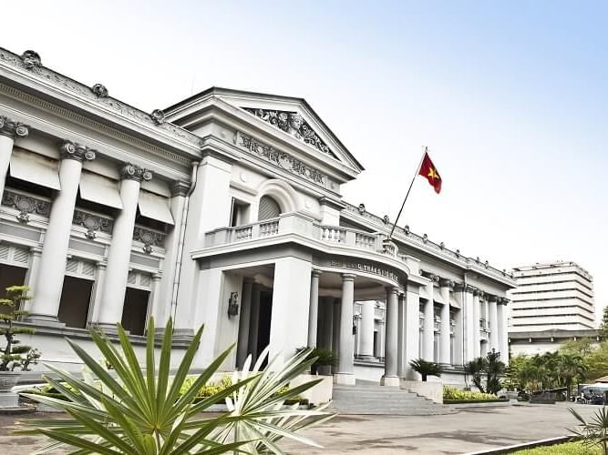Museum of Ho Chi Minh City
Museum highlighting the city's history and cultural heritage.
Address: 65 Lý Tự Trọng, Quận 1
Open time: 08:00 – 17:00 daily
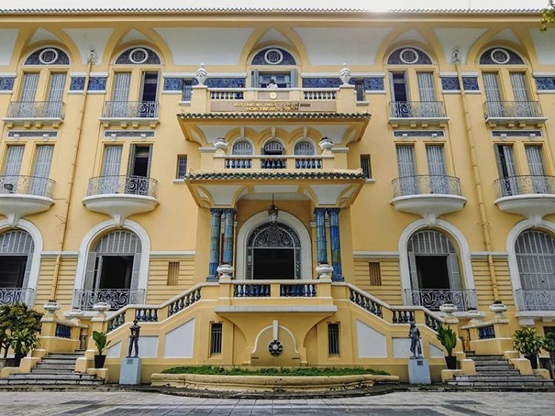Ho Chi Minh City Fine Arts Museum
Museum showcasing Vietnamese art and exhibitions.
Address: 97A Phó Đức Chính, Quận 1
Open time: 08:00 – 17:00 daily
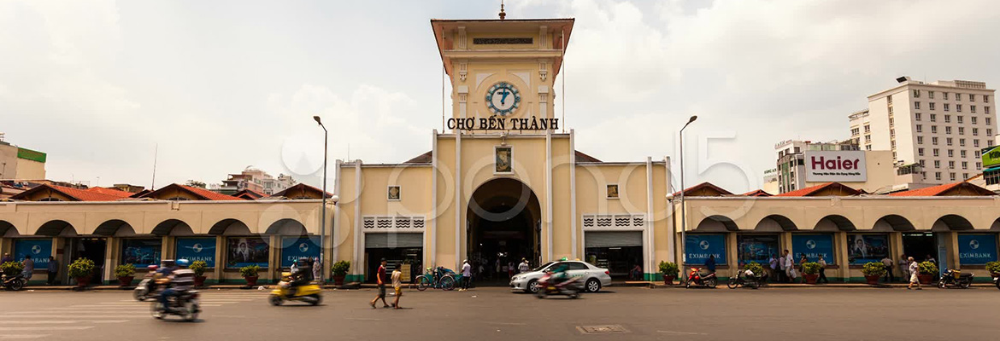Ben Thanh Market
Bustling market offering a variety of goods and local products.
Address: Lê Lợi, Quận 1
Open time: 06:00 – 18:00 daily
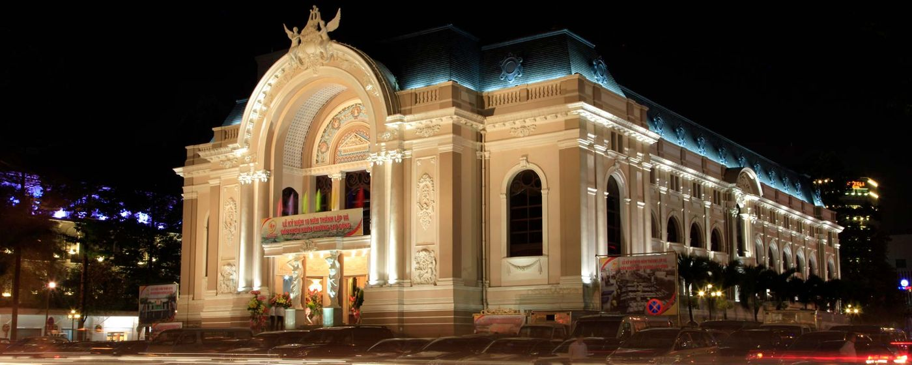Saigon Opera House
Iconic building hosting various cultural performances.
Address: 7 Công Trường Lam Sơn, Quận 1
Open time: 08:00 – 17:00 daily
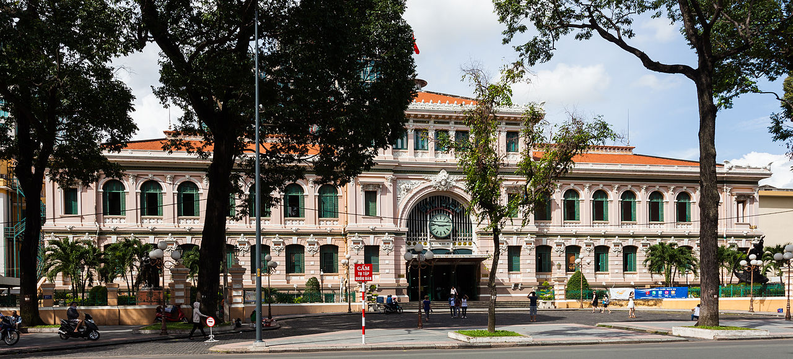Ho Chi Minh City Post Office
Historic post office known for its colonial architecture.
Address: 2 Công Trường Lam Sơn, Quận 1
Open time: 07:00 – 19:00 daily
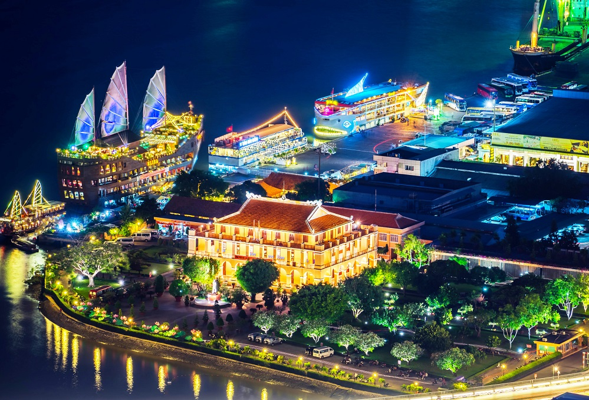Dragon House - Ho Chi Minh Museum
Museum showcasing Ho Chi Minh's life and legacy.
Address: 1 Nguyễn Tất Thành, Quận 1
Open time: 08:00 – 17:00 daily
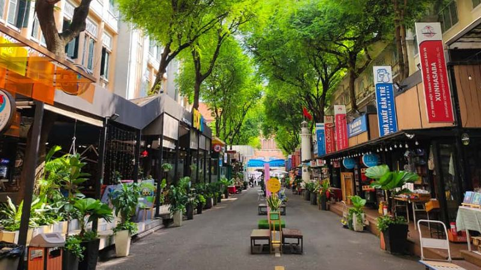Ho Chi Minh City Book Street
Street lined with bookstores offering a variety of books.
Address: Nguyễn Văn Bình, Quận 1
Open time: 08:00 – 22:00 daily
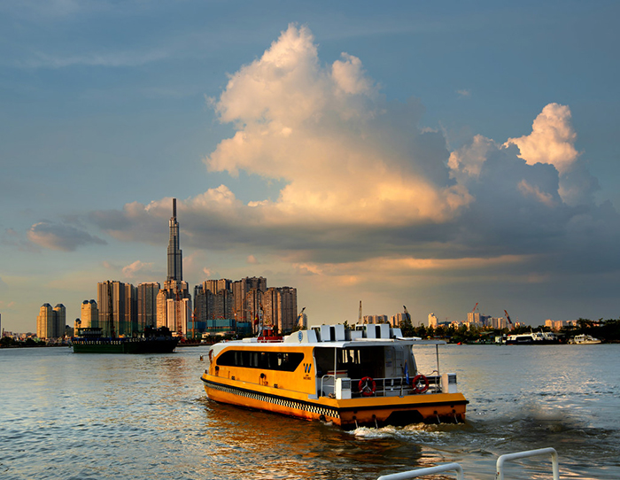Waterbus Thu Thiem
Waterbus service offering scenic views of the city.
Address: Bạch Đằng, Quận 1
Open time: 08:00 – 18:00 daily
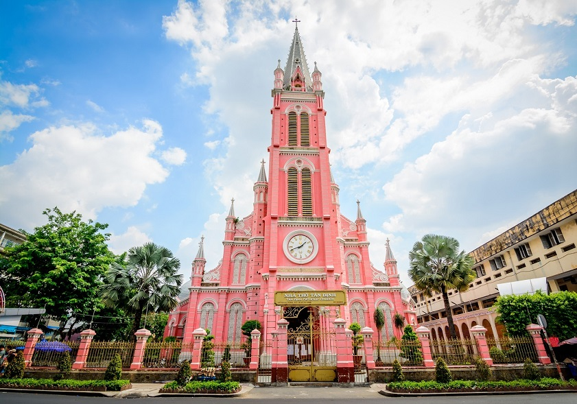Tân Định Catholic Church
Catholic church known for its pink façade and architectural beauty.
Address: 289 Hai Bà Trưng, Quận 3
Open time: 05:00 – 18:00 daily
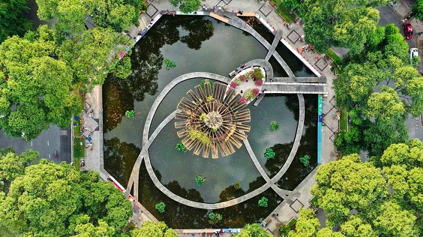Turtle Lake
Public square known for its turtle-shaped fountain.
Address: Võ Văn Tần, Quận 3
Open time: Open 24 hours
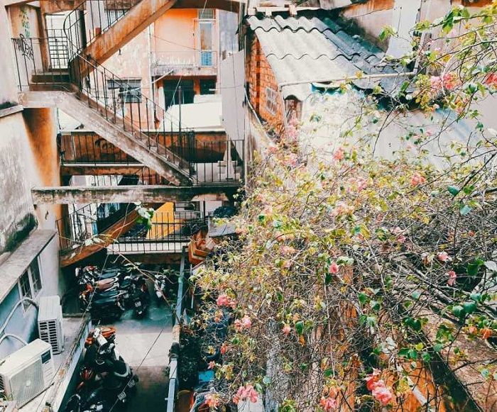Tôn Thất Đạm Apartment Building
Residential building known for its architectural design.
Address: 12 Tôn Thất Đạm, Quận 1
Open time: Open 24 hours
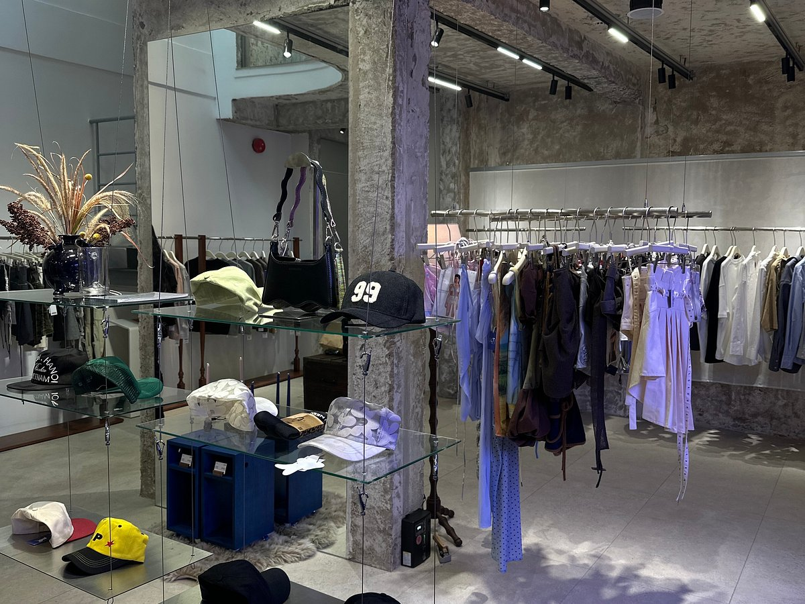Rue Miche Boutique
Chic boutique offering fashion items, accessories, and lifestyle products.
Address: Quận 1
Open time: 09:00 – 21:00 daily
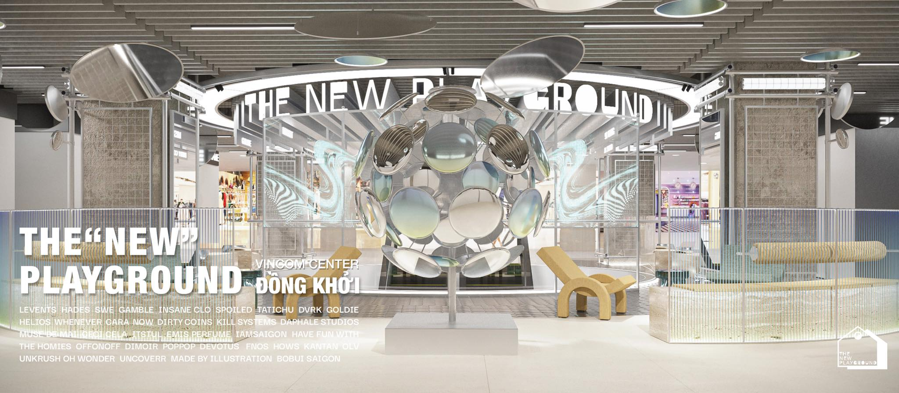The New Playground
An underground shopping area
Address: Quận 1
Open time: 10:00 – 22:00 daily